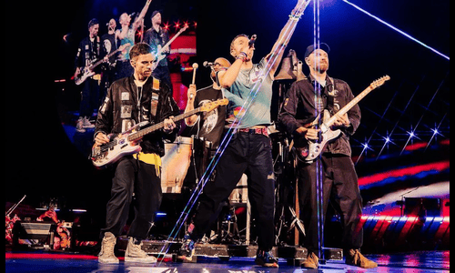

Wie ben ik?

| Datum | Titel | Omschrijving |
|---|---|---|
| Opleiding | ||
| 2017 - 2024 | Heilige Familie Ieper | Informaticabeheer |
| 2024 - ....... | Vives Kortrijk | Bachelor in de toegepaste informatica |
| 2024 - 2025 (voorzien) | Syntra West | Beleggingsadviseur avondschool |
| Werk | ||
| 2020 - 2021 | Speelpleinwerking Moorslede & Dadizele | Animator |
| 2021 - 2023 | Speelpleinwerking Moorslede & Dadizele | Hoofd-Animator |
| 2023 - ....... | Speelpleinwerking Moorslede & Dadizele | Pleinverantwoordelijke |
| 2023 - ...... | RTS Voice Data Video Communication | Student Service / Configuration Engineer |
Enkele hobbies waar ik graag mijn vrije tijd aan spendeer!
| Soort | Titel | Artiest/Producer | Foto |
|---|---|---|---|
| Film | Oppenheimer | Cristopher Nolan |  |
| Muziek | Alle 70's en 80's muziek |  |
|
| Band | Coldplay |  | |